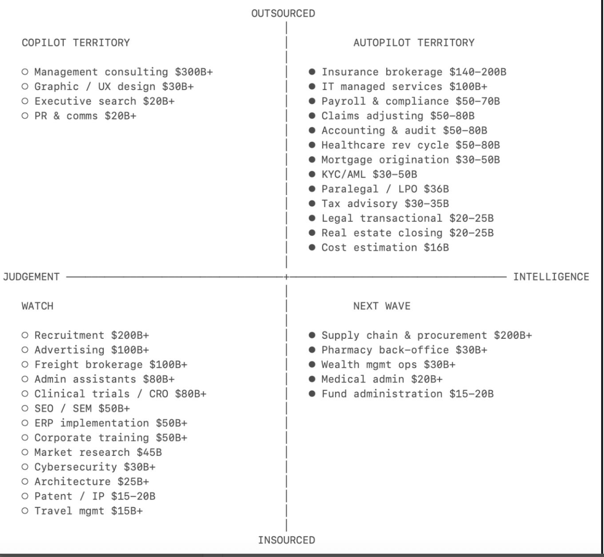
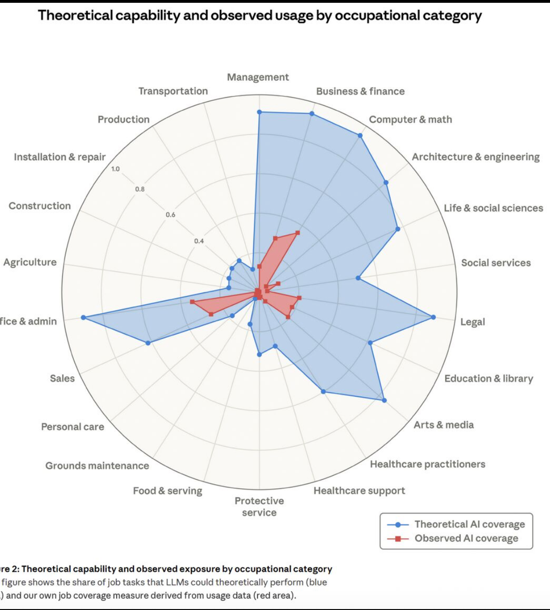

Market Map · Two visual frameworks for where AI value lands
The AI Opportunity Map — Where the Money Moves
Two ways of looking at the same AI opportunity. One sizes the markets being eaten ("Services-as-Software"); the other shows how much AI could do a job versus how much it is actually being used for that job today.
A huge share of the economy is labour sold as a service — consulting, claims processing, bookkeeping, recruitment. The AI-agent thesis is that a large slice of this work turns into software you buy by the outcome ("services-as-software"). These two maps are useful because they answer two different questions: which markets are biggest and most ready, and where is AI's potential furthest ahead of where it's actually being used.
Every market here is an existing services industry, plotted on two axes and tagged with its rough annual market size (TAM). The position tells you how soon and how fully AI is likely to take the work over.
Top ↔ Bottom — Outsourced vs Insourced: is this work normally bought from outside providers, or done in-house? Outsourced work has a clean budget line and an easy buyer, so it is easier to attack.
Left ↔ Right — Judgement vs Intelligence: is the work mostly human judgement and relationships, or mostly codifiable processing? The more it leans to "intelligence", the more fully an agent can own it.

The original map. Transcribed below with the same figures.
◄ Judgement-heavyIntelligence-heavy ►
OutsourcedInsourced
Copilot Territory
Outsourced × Judgement — AI augments the human; it rarely replaces them.
Management consulting — $300B+
Graphic / UX design — $30B+
Executive search — $20B+
PR & comms — $20B+
Autopilot Territory
Outsourced × Intelligence — the hot zone: codifiable work with a budget already leaving the building.
Insurance brokerage — $140–200B
IT managed services — $100B+
Claims adjusting — $50–80B
Accounting & audit — $50–80B
Healthcare rev cycle — $80B+
Payroll & compliance — $50–70B
Mortgage origination — $30–50B
KYC / AML — $30–50B
Paralegal / LPO — $36B
Tax advisory — $30–35B
Legal transactional — $20–25B
Real estate closing — $20–25B
Cost estimation — $16B
Watch
Insourced × Judgement — done in-house and judgement-led; slower to flip, worth watching.
Recruitment — $200B+
Advertising — $100B+
Freight brokerage — $100B+
Admin assistants — $80B+
Clinical trials / CRO — $80B+
SEO / SEM — $50B+
ERP implementation — $50B+
Corporate training — $50B+
Market research — $45B
Cybersecurity — $30B+
Architecture — $25B+
Patent / IP — $15–20B
Travel mgmt — $15B+
Next Wave
Insourced × Intelligence — codifiable but currently kept in-house; the emerging frontier.
Supply chain & procurement — $200B+
Pharmacy back-office — $30B+
Wealth mgmt ops — $30B+
Medical admin — $20B+
Fund administration — $15–20B
The one read: the Autopilot quadrant is where the biggest, most attackable budgets sit — outsourced, intelligence-heavy work where "buy the outcome" beats "hire a firm". That is exactly the zone an agentic-ops startup wants to fish in. Copilot work resists full automation (judgement + relationships); Watch and Next Wave are real but either slower to flip or still locked inside companies.
2 · AI's Potential vs. Actual Use, by Occupation
Where the first map sizes the markets, this one measures the gap: for each occupation, how much of the work AI could in theory handle, versus how much AI is actually being used for that work today, based on real usage data.

Theoretical AI capability vs. observed AI usage, by occupational category. Source: Anthropic, "Labor market impacts of AI: A new measure and early evidence" (March 2026), part of the Anthropic Economic Index.
It's a radar chart: each of the 22 spokes is a U.S. Bureau of Labor Statistics occupational group, built on the Labor Department's O*NET database of ~20,000 work tasks. The further a point sits from the centre, the higher the coverage for that category.
Blue shape — theoretical AI capability: the share of that occupation's tasks an AI model could plausibly do.
Red shape — observed AI usage ("exposure"): the share of tasks that actually show up in real, work-related AI usage. It is weighted: full automation (AI does the task) counts full, while assistance (AI helps, a human still does the substantive work) counts half.
The one read: the gap between the two shapes is the opportunity — work AI could do but isn't yet being used for. Anthropic's headline finding is that observed usage trails theoretical capability everywhere, by roughly 48–74 percentage points; no occupation is close to its ceiling. The blue shape stretches furthest on the right-hand, white-collar knowledge jobs (legal, finance, computer & math, architecture, arts & media) plus office & admin on the left — yet red stays small for almost all of them. On the physical, hands-on jobs at the bottom-left (construction, agriculture, transportation, food service) both shapes stay near the centre, because AI can't yet do much of that work at all.
The opportunity areas, one by one — with what to actually build
Ordered roughly by attractiveness (size of the gap × how ready the market is today). For each: the capability-vs-usage gap, concrete things a team could build, and proof that it's already a real, funded market — so these aren't hypotheticals.
1 · Legal 89% could · ~20% used · ~69-pt gap
The widest gap on the chart. The work — reading, drafting, reviewing documents — is textbook-codifiable; what holds it back is liability and regulation, not capability. That makes it the single most attackable area.
Practical things to build
Contract review & redlining against a firm's own playbook (NDAs, MSAs, vendor and employment contracts) — flag off-market terms, suggest fallback language.
M&A due diligence — bulk question-answering across thousands of documents in a data room, surfacing risks with citations.
Cited legal research — answers grounded in case law and regulation, with sources, inside the tools lawyers already use (Word, DMS).
Drafting agents for repeatable matters — briefs, memos, fund-formation packets — and multi-step workflow agents that run a whole matter type end to end.
Already real: Harvey raised at an $11B valuation (Mar 2026), with 100k+ lawyers and 25k+ custom agents running M&A, diligence and drafting; competitors include Legora, Spellbook (contract drafting), EvenUp (personal injury), Darrow (class actions). Legal-tech raised ~$2.3B in Q1 2026 alone.
2 · Business & finance / accounting 94.3% could · ~28% used · ~66-pt gap
Highest theoretical capability on the entire chart. The work is reconciling, modelling, reporting and drafting — almost entirely codifiable — yet barely a quarter is deployed.
Practical things to build
Autonomous bookkeeping — transaction categorisation and reconciliation that learns a business's patterns.
Month-end close acceleration — collapse a 12-day close to ~3 days with automated schedules and reconciliations.
FP&A — forecasts, variance analysis and board decks generated from the ledger.
Order-to-cash and internal audit agents — invoicing, collections and exception handling; or pulling evidence, testing controls and producing audit-ready workpapers.
Already real: Puzzle auto-processes ~98% of transactions; Zeni and Finlens (YC/Accel) target startups; Rex runs order-to-cash agents; Arden does internal-audit/SOX; LiveFlow unifies ERP + FP&A. The AI-accounting market is projected near $10.9B in 2026.
3 · Computer & math (software) 94.3% could · ~33% used · most-adopted
Tied for highest capability and the most deployed category — individual programmers hit 74.5% observed exposure, the single most-exposed job in the study. It's the proof that the gap can close fast; even so, two-thirds of the potential is untapped.
Practical things to build
Delegated engineering — hand an agent whole issues, tests, migrations, refactors and cleanup, not just autocomplete.
Code review & PR automation — first-pass review, test generation, changelog and doc updates.
Legacy modernisation — translate and refactor old codebases (COBOL→Java, framework upgrades).
Internal-tool scaffolding for non-engineers, and vertical agent tooling tied to a specific stack via MCP.
Already real: Claude Code reached an estimated ~$2.5B annualised revenue by Mar 2026; Cursor, OpenAI Codex (3M+ weekly users), Devin and Replit Agent round out the field. 2026 is the "agent engineering" phase — delegation, not completion.
4 · Office & admin + back-office ops 90% could · ~25% used
Sits on the left of the chart but behaves like the right-hand cluster — huge codifiable volume, lightly deployed. Data-entry keyers (67%) and customer-service reps (70%) are among the most-exposed individual jobs.
Practical things to build
LLM-native document processing — parse messy PDFs, emails and intake forms into structured data, reasoning over them rather than brittle OCR.
Insurance claims adjudication — auto-approve straightforward claims, route exceptions to human adjusters.
KYC/AML — customer due-diligence, screening and case write-ups.
Customer-support agents resolving tickets end to end, plus inbox triage, scheduling and status updates.
Already real: Sedgwick's "Sidekick" runs claims workflows; Moody's ships agentic KYC; health insurers already auto-process 80–85% of claims. Support agents — Sierra ($15.8B valuation, May 2026), Decagon ($4.5B), Intercom Fin (71% avg resolution) — hit 55–70% automation. Insurer full-scale AI adoption jumped 8%→34% in a year.
The category looks low because diagnosis and treatment are judgment-led, physical and regulated. But the paperwork around care is wide open — medical-record specialists already show 66.7% observed exposure.
Practical things to build
Ambient scribing — turn the patient conversation into a structured clinical note straight into the EHR.
Medical coding & records — assign codes and assemble records from the encounter.
Prior-authorisation and claims paperwork — draft and submit the administrative load that burns clinician time.
Patient messaging, referrals and discharge summaries drafted for clinician sign-off.
Already real: Abridge (~$208/provider/mo, Epic-native) and Nuance DAX Copilot cut note time meaningfully (one study: 10.3→8.2 min/visit). The opportunity is the documentation, not the diagnosis.
6 · Architecture & engineering 84.8% could · low used
Design calculation, documentation and review are codifiable, but adoption is earlier-stage than legal or finance — which means less crowded.
Practical things to build
Generative design — produce multiple code-compliant options from constraints (cost, materials, space), cutting space-planning from weeks to minutes.
Automated clash detection & BIM model checking.
Drawing, spec and submittal generation from the model.
Predictive performance — structural, cost and energy outcomes forecast before detailed drawings; plus cost estimation and quantity takeoff.
Already real: generative design is being folded into BIM workflows and "agentic BIM" is emerging, with new roles like AI Coordinator appearing in AEC firms.
7 · Arts & media / marketing 83.7% could · low–moderate used
High capability; real usage is higher than the chart suggests because much of it is assistive, which the measure deliberately half-weights.
Practical things to build
On-brand content pipelines — blogs, ads and social posts generated from a single brief, voice-consistent across channels.
Product imagery generation at scale (reportedly ~10x faster, ~50% cheaper than traditional production).
Campaign variations for A/B testing, plus short-form video scripts and clips.
Localisation and translation across markets.
Already real: Jasper serves 100k+ teams with marketing agents, content pipelines, image pipelines and enterprise governance; agencies use it to spin campaign variations per client.
8 · Education & library moderate–high could · low used
Large task volume (planning, grading, tutoring, admin) with little deployment — and strong bottoms-up adoption via free tiers.
1:1 Socratic tutoring that guides with questions rather than handing over answers.
IEP, behaviour-plan and parent-communication drafting; assessment and content generation.
Already real: MagicSchool ships 80+ teacher tools; Khanmigo scaled from 40k to 700k K-12 students in one school year; Brisk and Gradescope speed grading. Free tiers are driving fast adoption.
9 · Life & social sciences (research) ~80% could · low used
Research-heavy work AI suits well, with deep technical moats — longer cycles and more capital, but defensible.
Practical things to build
Literature review & synthesis across thousands of papers.
Data analysis and statistical workflows.
Lab automation — agents that run the design-make-test-analyse cycle.
Compound and target design (TechBio), plus grant and paper drafting.
Already real: Recursion OS ("self-driving biology") and Insitro pair automated experimentation with ML; Eli Lilly's TuneLab integrated with Schrödinger in Jan 2026.
10 · Social services moderate could · low used
Earliest-stage of the set. The human-contact core stays human; the opportunity is the paperwork layer around it — and it's a large, under-served public-sector and nonprofit market.
Practical things to build
Case-note and documentation automation.
Intake and eligibility determination.
Benefits-navigation and form-filling assistants for clients.
Resource matching, referral and compliance reporting.
Status: mostly greenfield — fewer category leaders than legal/finance, which is the opportunity if you can navigate public-sector procurement.
Read it honestly: this measures usage on one platform, so "observed" is a floor, not a census; half-weighting assistance deliberately shrinks the red shape; and task-level capability is not whole-job replacement. Tellingly, the same report found no measurable rise in unemployment in the most-exposed occupations so far — only tentative signs of slower hiring for 22–25-year-olds. The gap is an opportunity that hasn't closed, not evidence of jobs already lost.
3 · How to read both maps together
The first map says which market; the second says how far ahead AI's potential is of its actual use there.
Pick the market from Map 1: aim at the Autopilot quadrant — outsourced, intelligence-heavy work with a large, already-leaving budget (claims, rev-cycle, KYC/AML, tax, legal transactional).
Check the gap from Map 2: the biggest blue-minus-red gaps sit in desk jobs like legal (~69 pts), finance (~66 pts), and admin — confirming those are markets where AI can do far more than it's currently doing, i.e. genuine white space rather than already-saturated demand.
Use this map…
…to answer
Best signal it gives
Services-as-Software (Map 1)
Which services market is biggest and most ready to flip to "buy the outcome"?
The Autopilot quadrant — sized, outsourced, codifiable.
Capability vs. Usage gap (Map 2)
Where is AI's potential furthest ahead of how much it's actually used today?
Occupations where the blue shape is large but the red shape is still small.
On the numbers: the TAM figures are the original authors' estimates, and the capability/usage chart reflects one usage dataset at one point in time — both will shift as adoption catches up. Use them to narrow the search.